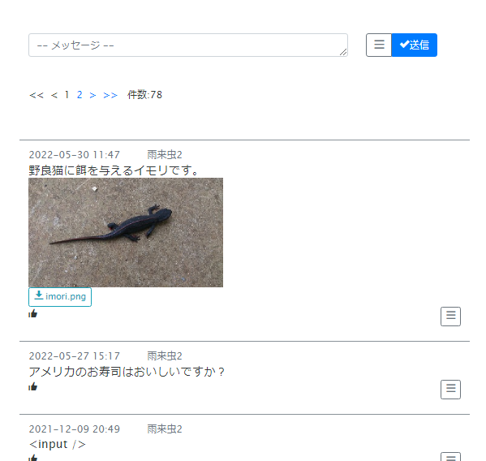

はじめに
CrudBaseに付属するサービスであるメッセージボードの改良案件である。
メッセージボードにGoodボタン（評価）機能をつけたい。
時間も限られているため、ひと段落つくところまでの改良でよい。
中断してもすぐに再開できるようにこの記録を残す。
現状
メッセージ投稿機能のテキスト送信およびテキストの表示は正常。
XSSサニタイズも問題ないようだ。
画像添付して送信ボタンを押したときに画像が表示されないバグがある。
しかし、ブラウザをリロードすると画像はちゃんと表示される。
メッセージの編集が可能。他の人が投稿したメッセージは編集できない使用になっている。
メッセージの削除も可能。基本的に自分が投稿したメッセージしか削除できないが、管理者社は他のユーザーのメッセージを削除できる。
Goodボタンは張りぼてであり未作成。今回作成する箇所だ。
あとURLが文字列に含まれるならリンク化させたいところ。また、youtube動画のリンクが張られた場合、動画のサムネイルが表示されるようにしたい。
これは次回対応だ。

今回の作業について
- 評価ボタン機能の追加。
- バグ修正：画像添付して送信ボタンを押したときに画像が表示されない
- URLのリンク化
- Youtubeリンクはサムネイル表示
評価ボタンのインターフェースについて考察
基本的にGoodボタン(「いいね」ボタン)の一種類であるが、低評価ボタンや返事アイコンにも対応させたいところだ。
だれがGoodボタンを押したか分かるようにしたい。
この機能を実現するために一般的なSNSのインターフェースではどうなっているだろうか？
他のチャットについて調べてみた。
ツイッターはハートアイコン＋評価人数のボタン方式である。このボタンを押すと評価される。
ツイッターはだれが評価したか分からない仕様である。評価アクションと評価表示が一体型とうことだ。参考にならず。
チャットワークもツイッターと同じで評価ボタン＋人数という組み合わせである。
ただ評価の種類は複数ある。評価の種類ごとに評価アイコンが増えていく感じなのだろう。
だれが評価したかどうかは別のボタンで実装されている。
Yahooニュースは高評価ボタンと低評価ボタンの２種類が存在する。
やはり評価ボタンの隣に人数がついている。だれが評価したかは分からない仕様。
Youtubeも高評価ボタンと低評価ボタンの２種類。
高評価のみ人数がついており、低評価ボタンには人数は表示されていない。
返信機能がついているのも特徴。この機能も欲しいが別の機会に検討しよう。
どのチャットか忘れたが過去に関わったチャットにこのような機能があった。
評価、または返事した人のアイコンが並んで表示されるというもの。
評価ボタンのインターフェースについて
評価ボタンは多くのチャットで採用されている「評価アイコン＋人数」という表記にしよう。
その評価ボタンは種類ごとに複数表示しよう。
だれが返信したが、返信したユーザーのアイコンを並べて表示しよう。新しく評価した順で。
とりあえず最大１００人くらいまでのアイコン表示とし、超過分は「その他○人」と表示しようかな。
評価ボタンは評価アイコン部分と評価人数部分で分けよう。
評価アイコンをクリックすると評価アクションになり、評価人数をクリックすると他の評価ユーザーを確認できるようにしよう。
評価ボタンとアクション
複数種の評価ボタンが存在するがアクションは一つにしよう。
評価ボタンの種類ごとに複数のアクションを用意するのは煩雑になりそうなのでしない。
特異性のある評価ボタンはパラメータでカバーすれば良いだろう。
パラメータには「型コード（type_code）」と言ったプロパティを一つ用意すれば十分なはずだ。
ロジック側で型コードを見て処理分岐するだけで特異性のある評価ボタンに対応できる。
評価ボタンを押したときがある状態のときは表記を変更する必要がある。
2回目に評価ボタンを押したときは、評価をキャンセルするという処理も必要だ。
DB設計
「★new」と書いている場所が、今回の修正おより機能追加場所になる。
既存テーブルには手を加えない。
- users ユーザーテーブル
- msg_boards メッセージボードテーブル
- msg_board_user_evals メッセージボード・ユーザー評価テーブル ★new
- msg_board_eval_types メッセージボード・評価種別テーブル★new
users ユーザーテーブル
Laravelのusersテーブルと同じもの
msg_boards メッセージボードテーブル
| Field | Type | Null | Key | Comment | memo |
|---|
| id | int(11) | NO | PRI | メッセージボードID | |
| other_id | int(11) | YES | | 外部ID | 拡張要素。別に空でもよい。 |
| user_id | int(11) | YES | | ユーザーID | メッセージを書き込んだユーザーのユーザーIDがセットされる。 |
| user_type | varchar(10) | YES | | ユーザータイプ | masterとguestの2種類あり。
masterは管理者を表し、guestは一般ユーザーを表す。
管理者と一般ユーザーでは機能に違いがある。 |
| message | varchar(2000) | YES | | メッセージ | メッセージのテキスト。 |
| attach_fn | varchar(512) | YES | | 添付ファイル | 添付ファイルのパスを保管する。 |
| sort_no | int(11) | YES | | 順番 | 管理画面用である。メッセージボードのソート自体は生成日時が使われる。 |
| delete_flg | tinyint(1) | YES | | 無効フラグ | 削除ボタンを押すと1になる。1の状態だと一覧から表示されない。 |
| update_user | varchar(50) | YES | | 更新者 | ログインユーザー名がセットされる。 |
| ip_addr | varchar(40) | YES | | IPアドレス | 管理画面用 |
| created | datetime | YES | | 生成日時 | メッセージ一覧の順番は、この日時が新しい順になる。
新しい投稿ほど上に表示。 |
| modified | timestamp | YES | | 更新日時 | 管理画面用 |
msg_board_user_evals メッセージボード・ユーザー評価テーブル
★new
| Field | Type | Null | Key | Comment | memo |
|---|
| id | int(11) | NO | PRI | | |
| msg_board_id | int(11) | YES | | メッセージボードID | メッセージボードＩＤ |
| user_id | int(11) | YES | | ユーザーID | 評価ボタンを押した人のユーザーＩＤ |
| eval_type_id | int(11) | YES | | 評価種別ID | 評価の種類。 |
| sort_no | int(11) | YES | | 順番 | 管理画面用 |
| delete_flg | tinyint(1) | YES | | 無効フラグ | 管理画面用 |
| update_user | varchar(50) | YES | | 更新者 | 管理画面用 |
| ip_addr | varchar(40) | YES | | IPアドレス | 管理画面用 |
| created | datetime | YES | | 生成日時 | 管理画面用 |
| modified | timestamp | YES | | 更新日 | 管理画面用 |
msg_board_id, user_id, eval_type_idの組み合わせでユニークであること。
msg_board_eval_types メッセージボード・評価種別テーブル
★new
| Field | Type | Null | Key | Comment | memo |
|---|
| id | int(11) | NO | PRI | | |
| eval_type_code | varchar(12) | YES | | 評価タイプコード | 評価ボタンの種類毎に設定する一意なコード。 |
| eval_value | int(11) | YES | | 評価値 | 現在は未使用。拡張用に。 |
| icon_fn | varchar(512) | YES | | アイコンファイル名 | アイコンファイルのパス |
| note | varchar(1000) | YES | | ノート | 評価ボタンの種類毎ごとに説明を書く。管理画面用 |
| sort_no | int(11) | YES | | 順番 | 管理画面用 |
| delete_flg | tinyint(1) | YES | | 無効フラグ | 管理画面用 |
| update_user | varchar(50) | YES | | 更新者 | 管理画面用 |
| ip_addr | varchar(40) | YES | | IPアドレス | 管理画面用 |
| created | datetime | YES | | 生成日時 | 管理画面用 |
| modified | timestamp | YES | | 更新日 | 管理画面用 |
ER図
評価ボタン押下アクション
Ajaxで送信するパラメータ
| プロパティ | テーブル名.フィールド | フィールド名 | メモ |
|---|
| msg_board_id | msg_boards.id | メッセージボードID | - |
| eval_user_id | msg_board_user_evals.user_id | 評価したユーザーID | - |
| eval_type_id | msg_board_user_evals.eval_type_id | 評価種別ID | - |
| eval_type_code | msg_board_eval_types.eval_type_code | 評価種別コード | - |
| delete_flg | msg_board_eval_types.delete_flg | 無効フラグ | 未評価であれば0を送信、評価済みなら1を送信する。 |
| eval_cancel_flg | なし | 評価取消フラグ | 0:評価, 1:評価取消 |
バックエンド側
msg_board_id, eval_type_id, eval_user_idをWHERE条件にしてmsg_board_user_evalsテーブルから
レコードを1件取得を試みる。
レコード次第でDB登録の処理分岐を行う。
レコードを取得できなかった場合→ DB登録は「
初回評価登録」になる。
レコード取得に成功且つ、無効フラグが0である場合→DB登録は「
評価取消登録」になる。
レコード取得に成功且つ、無効フラグが1である場合→DB登録は「
再評価登録」になる。
評価ボタン押下時のDB登録
初回評価登録 → msg_board_user_evalsテーブルへ下記エンティティエンティティを挿入INSERTする。
| プロパティ | 登録する値 |
| msg_board_id | Ajax送信されてきた値 |
| eval_type_id | Ajax送信されてきた値 |
| delete_flg | 0 |
評価取消登録→2回目に評価ボタン押下時は評価取消登録になる。 → msg_board_user_evalsテーブルへ下記エンティティエンティティをUPDATEする。
再評価登録→評価取消から評価状態に戻す → msg_board_user_evalsテーブルへ下記エンティティエンティティをUPDATEする。
初期表示用にデータをDBから取得
DB
初期表示用のデータとその構造
①メッセージデータ ← メッセージエンティティの配列
メッセージエンティティ
id メッセージボードID(別名:msg_board_id)
other_id 外部ID
user_id ユーザーID
user_type ユーザータイプ
masterは管理者を表し、guestは一般ユーザーを表す。
管理者と一般ユーザーでは機能に違いがある。
message メッセージ
attach_fn 添付ファイル
ユーザー評価エンティティリスト ← ユーザー評価エンティティの配列（sort_no順）
ユーザー評価エンティティ
msg_board_id メッセージボードID
user_id ユーザーID
eval_type_id 評価種別ID
評価ボタンデータ ← 評価種別エンティティの配列(sort_no順)
eval_type_id 評価種別ID
評価人数
評価ユーザーデータ ← 評価ユーザーエンティティの配列（評価日時が新しい順）
評価ユーザーエンティティ
ユーザーID
ユーザーアイコンパス
ユーザーニックネーム
②評価種別ハッシュマップ キー:eval_type_id, 値:評価種別エンティティ
メッセージデータの取得と構造変換
メッセージボードテーブルからメッセージボードデータを取得（既に存在する処理）
メッセージボードデータをループ → each メッセージボードエンティティ
ユーザー評価テーブル（msg_board_user_evals ）からメッセージボードＩＤに紐づくユーザー評価データ1を取得する
SELECT
id,
msg_board_id,
user_id,
eval_type_id,
delete_flg,
modified
FROM
msg_board_user_evals
WHERE
msg_board_id = xxx
AND delete_flg = 0
ORDER BY modified
空の評価ボタンデータを作成する。
評価ボタンデータにユーザー評価データ1の各値を分類しながらセットおよび追加する。
メッセージボートデータに評価ボタンデータをセットする
ｘｘｘ
- ホーム
- プログラミングの覚書
- マネージメントの覚書
- システム改修案件を設計 | 既存のメッセージボードにGoodボタン（評価機能）を組み込む